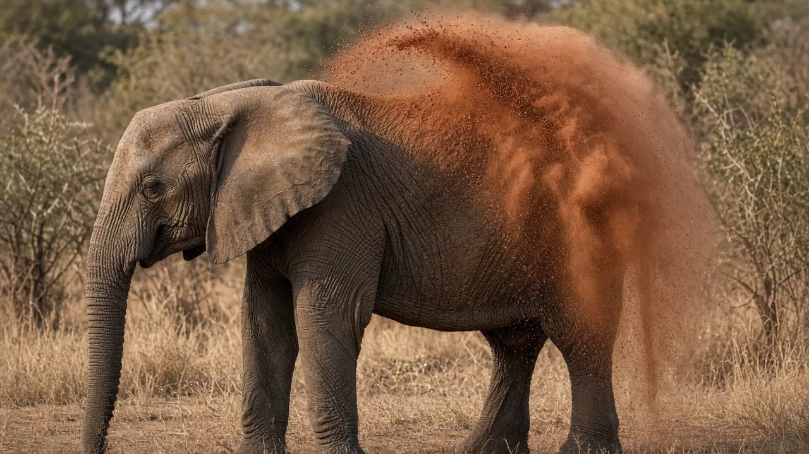

Why is elephant skin so wrinkly?
African bush elephant skin is wrinkled at two sizes: large folds you can see from a few meters away, and a network of cracks about 100 micrometres wide. A 2018 study found those cracks form when a brittle outer layer fractures, and that they help the skin hold water and mud.

Two sizes of wrinkle, not one
African bush elephant skin (Loxodonta africana) is wrinkled at two sizes you can tell apart. Large folds are what you see from a few meters away. Under those, Martins and colleagues, in Nature Communications in 2018, described a second pattern: a network of narrow channels. On the forehead of a juvenile in their figures, the channels are about 100 micrometres wide. Those channels are cracks in the surface, not folds of loose skin.
How the cracks form
The team used microscopy, computed tomography and a physics model. The channels are fractures in the outermost layer, the stratum corneum. That layer is brittle, it does not shed the way human skin does, and it can thicken past 300 to 400 micrometres. Martins and colleagues argue that the thickening builds bending stress in the troughs between small bumps, a few millimeters across, and the brittle surface cracks there. That is a different mechanism from a sheet cracking because it dried and shrank.
The same paper notes a newborn with the bumps already in place and the crevices not yet there. That fits a pattern that develops as the outer layer thickens, rather than a pattern the calf is born with.
What the cracks hold
Martins and colleagues say the channels help cooling, because they hold water, and help protect the animal from parasites and strong sun, because mud sticks in them. The water number they cite is older. Lillywhite and Stein, in the Journal of Zoology in 1987, made casts of elephant skin and reported that the sculptured surface held about 5 to 10 times more water than a flat surface. African skin, cut more deeply, held more than Asian skin. Both species, that paper reported, lack sebum and sweat glands and need regular wetting. Bathing, spraying and mud wallows are how elephants put the water back. The behavior is in why elephants throw mud and dust on themselves. The ears do a separate cooling job, covered in why elephants have big ears.
Thick, and still sensitive
The Smithsonian's National Zoo Asian elephant page says elephant skin ranges from paper thin inside the ears to about 1 inch (2.54 centimeters) thick around the back, and that it stays sensitive because of a rich nerve supply. San Diego Zoo Wildlife Alliance's elephant page describes the skin as loose and wrinkly. Thickness and the crack network are different facts. A back can be centimeters thick and still carry a surface of fine cracks. Skin sits with the ears, trunk and feet on the anatomy page.
African and Asian skin are not the same pattern
Lillywhite and Stein found wrinkles and crevices on both African and Asian elephants, with African skin sculptured more deeply and holding more water. Martins and colleagues went further on the fine channels. In their comparison, that narrow crack network showed up on African elephants and not on the Asian elephant skin they examined. African savanna elephants have the crack pattern the 2018 paper explains. Copying that mechanism onto Asian elephants would go past what either paper shows. Asian elephants still have thick, sensitive skin, and they still coat themselves in mud.
Frequently asked questions
Why do elephants have wrinkles?
African bush elephants have large folds plus a network of cracks about 100 micrometres wide. The cracks hold water and mud, which helps with cooling and with keeping mud on the skin.
Are elephant wrinkles the same as human wrinkles?
No. In African elephants they are fractures in a brittle outer layer, not folds from loose skin.
How thick is elephant skin?
The National Zoo says it ranges from paper thin inside the ears to about 1 inch (2.54 centimeters) thick around the back.
Is elephant skin sensitive?
Yes. Despite its thickness the skin has a rich nerve supply.
Do Asian elephants have the same skin cracks?
Lillywhite and Stein (1987) found wrinkles on both African and Asian elephants, with African skin holding more water. Martins and colleagues (2018) described a fine crack network on African elephants that was absent from the Asian skin in their comparison. We do not treat that African mechanism as proven for Asian elephants.
Sources
- Martins, A. F. and colleagues (2018). Locally-curved geometry generates bending cracks in the African elephant skin. Nature Communications 9: 3865. DOI 10.1038/s41467-018-06257-3
- Lillywhite, H. B. and Stein, B. R. (1987). Surface sculpturing and water retention of elephant skin. Journal of Zoology 211: 727 to 734. DOI 10.1111/j.1469-7998.1987.tb04483.x
- Smithsonian's National Zoo and Conservation Biology Institute: Asian elephant
- San Diego Zoo Wildlife Alliance: Elephant
Cite this page
APA
TuskWise. (2026, November 20). Why is elephant skin so wrinkly? https://tuskwise.com/blog/why-is-elephant-skin-so-wrinkly.html
MLA
“Why is elephant skin so wrinkly?” TuskWise, 20 Nov. 2026, tuskwise.com/blog/why-is-elephant-skin-so-wrinkly.html.
Chicago
TuskWise. “Why is elephant skin so wrinkly?” TuskWise. Last modified November 20, 2026. https://tuskwise.com/blog/why-is-elephant-skin-so-wrinkly.html.